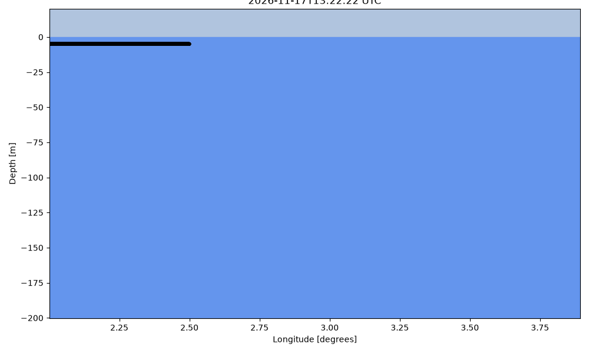

Note
Go to the end to download the full example code.
Vertical mixing with fallback diffusivity model
With diffusivitymodel='environment' and diffusivitymodel_fallback,
elements use the reader diffusivity where it has coverage, and the fallback
model elsewhere.
from datetime import datetime, timedelta
from opendrift.models.oceandrift import OceanDrift
from opendrift.readers.reader_constant import Reader as ConstantReader
Diffusivity from an ocean model west of 3°E only, and an eastward current
r_ocean_model = ConstantReader({'ocean_vertical_diffusivity': 0.01})
r_ocean_model.xmax = 3
r_current = ConstantReader({'x_sea_water_velocity': 0.3, 'y_sea_water_velocity': 0})
o = OceanDrift(loglevel=20)
o.add_reader([r_ocean_model, r_current])
o.set_config('environment:constant:y_wind', 8)
o.set_config('environment:fallback:ocean_mixed_layer_thickness', 30)
o.set_config('drift:vertical_mixing', True)
o.set_config('vertical_mixing:diffusivitymodel', 'environment')
o.set_config('vertical_mixing:diffusivitymodel_fallback', 'windspeed_Large1994')
o.set_config('vertical_mixing:background_diffusivity', 0.0001)
o.seed_cone(lon=[2, 2.5], lat=[60, 60], time=datetime.now(), number=2000, z=-5)
o.run(duration=timedelta(hours=72), time_step=1800)
o.animation_profile()
13:24:00 INFO opendrift:579: OpenDriftSimulation initialised (version 1.14.11 / v1.14.12-93-gcc8f52e)
13:24:00 INFO opendrift.models.basemodel.environment:204: Adding a global landmask from GSHHG
13:24:07 INFO opendrift.models.basemodel.environment:238: Fallback values will be used for the following variables which have no readers:
13:24:07 INFO opendrift.models.basemodel.environment:241: sea_surface_height: 0.000000
13:24:07 INFO opendrift.models.basemodel.environment:241: x_wind: 0.000000
13:24:07 INFO opendrift.models.basemodel.environment:241: upward_sea_water_velocity: 0.000000
13:24:07 INFO opendrift.models.basemodel.environment:241: horizontal_diffusivity: 0.000000
13:24:07 INFO opendrift.models.basemodel.environment:241: sea_surface_wave_significant_height: 0.000000
13:24:07 INFO opendrift.models.basemodel.environment:241: sea_surface_wave_stokes_drift_x_velocity: 0.000000
13:24:07 INFO opendrift.models.basemodel.environment:241: sea_surface_wave_stokes_drift_y_velocity: 0.000000
13:24:07 INFO opendrift.models.basemodel.environment:241: ocean_mixed_layer_thickness: 30.000000
13:24:07 INFO opendrift.models.basemodel.environment:241: sea_floor_depth_below_sea_level: 10000.000000
13:24:07 INFO opendrift:1932: Storing previous values of element property lon because of condition (('general:coastline_action', 'in', ['stranding', 'previous']), 'or', ('general:seafloor_action', 'in', ['previous']))
13:24:07 INFO opendrift:1932: Storing previous values of element property lat because of condition (('general:coastline_action', 'in', ['stranding', 'previous']), 'or', ('general:seafloor_action', 'in', ['previous']))
13:24:07 INFO opendrift:1940: Storing previous values of environment variable sea_surface_height because of condition ['drift:vertical_advection', 'is', True]
13:24:07 INFO opendrift:968: Using existing reader for land_binary_mask to move elements to ocean
13:24:07 INFO opendrift:1000: All points are in ocean
13:24:07 INFO opendrift:2248: 2026-11-17 13:24:00.956669 - step 1 of 144 - 2000 active elements (0 deactivated)
13:24:07 INFO opendrift:2248: 2026-11-17 13:54:00.956669 - step 2 of 144 - 2000 active elements (0 deactivated)
13:24:07 INFO opendrift:2248: 2026-11-17 14:24:00.956669 - step 3 of 144 - 2000 active elements (0 deactivated)
13:24:08 INFO opendrift:2248: 2026-11-17 14:54:00.956669 - step 4 of 144 - 2000 active elements (0 deactivated)
13:24:08 INFO opendrift:2248: 2026-11-17 15:24:00.956669 - step 5 of 144 - 2000 active elements (0 deactivated)
13:24:08 INFO opendrift:2248: 2026-11-17 15:54:00.956669 - step 6 of 144 - 2000 active elements (0 deactivated)
13:24:08 INFO opendrift:2248: 2026-11-17 16:24:00.956669 - step 7 of 144 - 2000 active elements (0 deactivated)
13:24:08 INFO opendrift:2248: 2026-11-17 16:54:00.956669 - step 8 of 144 - 2000 active elements (0 deactivated)
13:24:08 INFO opendrift:2248: 2026-11-17 17:24:00.956669 - step 9 of 144 - 2000 active elements (0 deactivated)
13:24:08 INFO opendrift:2248: 2026-11-17 17:54:00.956669 - step 10 of 144 - 2000 active elements (0 deactivated)
13:24:08 INFO opendrift:2248: 2026-11-17 18:24:00.956669 - step 11 of 144 - 2000 active elements (0 deactivated)
13:24:08 INFO opendrift:2248: 2026-11-17 18:54:00.956669 - step 12 of 144 - 2000 active elements (0 deactivated)
13:24:08 INFO opendrift:2248: 2026-11-17 19:24:00.956669 - step 13 of 144 - 2000 active elements (0 deactivated)
13:24:08 INFO opendrift:2248: 2026-11-17 19:54:00.956669 - step 14 of 144 - 2000 active elements (0 deactivated)
13:24:08 INFO opendrift:2248: 2026-11-17 20:24:00.956669 - step 15 of 144 - 2000 active elements (0 deactivated)
13:24:08 INFO opendrift:2248: 2026-11-17 20:54:00.956669 - step 16 of 144 - 2000 active elements (0 deactivated)
13:24:08 INFO opendrift:2248: 2026-11-17 21:24:00.956669 - step 17 of 144 - 2000 active elements (0 deactivated)
13:24:08 INFO opendrift:2248: 2026-11-17 21:54:00.956669 - step 18 of 144 - 2000 active elements (0 deactivated)
13:24:08 INFO opendrift:2248: 2026-11-17 22:24:00.956669 - step 19 of 144 - 2000 active elements (0 deactivated)
13:24:08 INFO opendrift:2248: 2026-11-17 22:54:00.956669 - step 20 of 144 - 2000 active elements (0 deactivated)
13:24:08 INFO opendrift:2248: 2026-11-17 23:24:00.956669 - step 21 of 144 - 2000 active elements (0 deactivated)
13:24:08 INFO opendrift:2248: 2026-11-17 23:54:00.956669 - step 22 of 144 - 2000 active elements (0 deactivated)
13:24:09 INFO opendrift:2248: 2026-11-18 00:24:00.956669 - step 23 of 144 - 2000 active elements (0 deactivated)
13:24:09 INFO opendrift:2248: 2026-11-18 00:54:00.956669 - step 24 of 144 - 2000 active elements (0 deactivated)
13:24:09 INFO opendrift:2248: 2026-11-18 01:24:00.956669 - step 25 of 144 - 2000 active elements (0 deactivated)
13:24:09 INFO opendrift:2248: 2026-11-18 01:54:00.956669 - step 26 of 144 - 2000 active elements (0 deactivated)
13:24:09 INFO opendrift:2248: 2026-11-18 02:24:00.956669 - step 27 of 144 - 2000 active elements (0 deactivated)
13:24:09 INFO opendrift:2248: 2026-11-18 02:54:00.956669 - step 28 of 144 - 2000 active elements (0 deactivated)
13:24:09 INFO opendrift:2248: 2026-11-18 03:24:00.956669 - step 29 of 144 - 2000 active elements (0 deactivated)
13:24:09 INFO opendrift:2248: 2026-11-18 03:54:00.956669 - step 30 of 144 - 2000 active elements (0 deactivated)
13:24:09 INFO opendrift:2248: 2026-11-18 04:24:00.956669 - step 31 of 144 - 2000 active elements (0 deactivated)
13:24:09 INFO opendrift:2248: 2026-11-18 04:54:00.956669 - step 32 of 144 - 2000 active elements (0 deactivated)
13:24:09 INFO opendrift:2248: 2026-11-18 05:24:00.956669 - step 33 of 144 - 2000 active elements (0 deactivated)
13:24:09 INFO opendrift:2248: 2026-11-18 05:54:00.956669 - step 34 of 144 - 2000 active elements (0 deactivated)
13:24:09 INFO opendrift:2248: 2026-11-18 06:24:00.956669 - step 35 of 144 - 2000 active elements (0 deactivated)
13:24:09 INFO opendrift:2248: 2026-11-18 06:54:00.956669 - step 36 of 144 - 2000 active elements (0 deactivated)
13:24:09 INFO opendrift:2248: 2026-11-18 07:24:00.956669 - step 37 of 144 - 2000 active elements (0 deactivated)
13:24:09 INFO opendrift:2248: 2026-11-18 07:54:00.956669 - step 38 of 144 - 2000 active elements (0 deactivated)
13:24:09 INFO opendrift:2248: 2026-11-18 08:24:00.956669 - step 39 of 144 - 2000 active elements (0 deactivated)
13:24:09 INFO opendrift:2248: 2026-11-18 08:54:00.956669 - step 40 of 144 - 2000 active elements (0 deactivated)
13:24:10 INFO opendrift:2248: 2026-11-18 09:24:00.956669 - step 41 of 144 - 2000 active elements (0 deactivated)
13:24:10 INFO opendrift:2248: 2026-11-18 09:54:00.956669 - step 42 of 144 - 2000 active elements (0 deactivated)
13:24:10 INFO opendrift:2248: 2026-11-18 10:24:00.956669 - step 43 of 144 - 2000 active elements (0 deactivated)
13:24:10 INFO opendrift:2248: 2026-11-18 10:54:00.956669 - step 44 of 144 - 2000 active elements (0 deactivated)
13:24:10 INFO opendrift:2248: 2026-11-18 11:24:00.956669 - step 45 of 144 - 2000 active elements (0 deactivated)
13:24:10 INFO opendrift:2248: 2026-11-18 11:54:00.956669 - step 46 of 144 - 2000 active elements (0 deactivated)
13:24:10 INFO opendrift:2248: 2026-11-18 12:24:00.956669 - step 47 of 144 - 2000 active elements (0 deactivated)
13:24:10 INFO opendrift:2248: 2026-11-18 12:54:00.956669 - step 48 of 144 - 2000 active elements (0 deactivated)
13:24:10 INFO opendrift:2248: 2026-11-18 13:24:00.956669 - step 49 of 144 - 2000 active elements (0 deactivated)
13:24:10 INFO opendrift:2248: 2026-11-18 13:54:00.956669 - step 50 of 144 - 2000 active elements (0 deactivated)
13:24:10 INFO opendrift:2248: 2026-11-18 14:24:00.956669 - step 51 of 144 - 2000 active elements (0 deactivated)
13:24:10 INFO opendrift:2248: 2026-11-18 14:54:00.956669 - step 52 of 144 - 2000 active elements (0 deactivated)
13:24:10 INFO opendrift:2248: 2026-11-18 15:24:00.956669 - step 53 of 144 - 2000 active elements (0 deactivated)
13:24:10 INFO opendrift:2248: 2026-11-18 15:54:00.956669 - step 54 of 144 - 2000 active elements (0 deactivated)
13:24:10 INFO opendrift:2248: 2026-11-18 16:24:00.956669 - step 55 of 144 - 2000 active elements (0 deactivated)
13:24:10 INFO opendrift:2248: 2026-11-18 16:54:00.956669 - step 56 of 144 - 2000 active elements (0 deactivated)
13:24:10 INFO opendrift:2248: 2026-11-18 17:24:00.956669 - step 57 of 144 - 2000 active elements (0 deactivated)
13:24:10 INFO opendrift:2248: 2026-11-18 17:54:00.956669 - step 58 of 144 - 2000 active elements (0 deactivated)
13:24:10 INFO opendrift:2248: 2026-11-18 18:24:00.956669 - step 59 of 144 - 2000 active elements (0 deactivated)
13:24:11 INFO opendrift:2248: 2026-11-18 18:54:00.956669 - step 60 of 144 - 2000 active elements (0 deactivated)
13:24:11 INFO opendrift:2248: 2026-11-18 19:24:00.956669 - step 61 of 144 - 2000 active elements (0 deactivated)
13:24:11 INFO opendrift:2248: 2026-11-18 19:54:00.956669 - step 62 of 144 - 2000 active elements (0 deactivated)
13:24:11 INFO opendrift:2248: 2026-11-18 20:24:00.956669 - step 63 of 144 - 2000 active elements (0 deactivated)
13:24:11 INFO opendrift:2248: 2026-11-18 20:54:00.956669 - step 64 of 144 - 2000 active elements (0 deactivated)
13:24:11 INFO opendrift:2248: 2026-11-18 21:24:00.956669 - step 65 of 144 - 2000 active elements (0 deactivated)
13:24:11 INFO opendrift:2248: 2026-11-18 21:54:00.956669 - step 66 of 144 - 2000 active elements (0 deactivated)
13:24:11 INFO opendrift:2248: 2026-11-18 22:24:00.956669 - step 67 of 144 - 2000 active elements (0 deactivated)
13:24:11 INFO opendrift:2248: 2026-11-18 22:54:00.956669 - step 68 of 144 - 2000 active elements (0 deactivated)
13:24:11 INFO opendrift:2248: 2026-11-18 23:24:00.956669 - step 69 of 144 - 2000 active elements (0 deactivated)
13:24:11 INFO opendrift:2248: 2026-11-18 23:54:00.956669 - step 70 of 144 - 2000 active elements (0 deactivated)
13:24:11 INFO opendrift:2248: 2026-11-19 00:24:00.956669 - step 71 of 144 - 2000 active elements (0 deactivated)
13:24:11 INFO opendrift:2248: 2026-11-19 00:54:00.956669 - step 72 of 144 - 2000 active elements (0 deactivated)
13:24:11 INFO opendrift:2248: 2026-11-19 01:24:00.956669 - step 73 of 144 - 2000 active elements (0 deactivated)
13:24:11 INFO opendrift:2248: 2026-11-19 01:54:00.956669 - step 74 of 144 - 2000 active elements (0 deactivated)
13:24:11 INFO opendrift:2248: 2026-11-19 02:24:00.956669 - step 75 of 144 - 2000 active elements (0 deactivated)
13:24:12 INFO opendrift:2248: 2026-11-19 02:54:00.956669 - step 76 of 144 - 2000 active elements (0 deactivated)
13:24:12 INFO opendrift:2248: 2026-11-19 03:24:00.956669 - step 77 of 144 - 2000 active elements (0 deactivated)
13:24:12 INFO opendrift:2248: 2026-11-19 03:54:00.956669 - step 78 of 144 - 2000 active elements (0 deactivated)
13:24:12 INFO opendrift:2248: 2026-11-19 04:24:00.956669 - step 79 of 144 - 2000 active elements (0 deactivated)
13:24:12 INFO opendrift:2248: 2026-11-19 04:54:00.956669 - step 80 of 144 - 2000 active elements (0 deactivated)
13:24:12 INFO opendrift:2248: 2026-11-19 05:24:00.956669 - step 81 of 144 - 2000 active elements (0 deactivated)
13:24:12 INFO opendrift:2248: 2026-11-19 05:54:00.956669 - step 82 of 144 - 2000 active elements (0 deactivated)
13:24:12 INFO opendrift:2248: 2026-11-19 06:24:00.956669 - step 83 of 144 - 2000 active elements (0 deactivated)
13:24:12 INFO opendrift:2248: 2026-11-19 06:54:00.956669 - step 84 of 144 - 2000 active elements (0 deactivated)
13:24:12 INFO opendrift:2248: 2026-11-19 07:24:00.956669 - step 85 of 144 - 2000 active elements (0 deactivated)
13:24:12 INFO opendrift:2248: 2026-11-19 07:54:00.956669 - step 86 of 144 - 2000 active elements (0 deactivated)
13:24:12 INFO opendrift:2248: 2026-11-19 08:24:00.956669 - step 87 of 144 - 2000 active elements (0 deactivated)
13:24:12 INFO opendrift:2248: 2026-11-19 08:54:00.956669 - step 88 of 144 - 2000 active elements (0 deactivated)
13:24:12 INFO opendrift:2248: 2026-11-19 09:24:00.956669 - step 89 of 144 - 2000 active elements (0 deactivated)
13:24:12 INFO opendrift:2248: 2026-11-19 09:54:00.956669 - step 90 of 144 - 2000 active elements (0 deactivated)
13:24:12 INFO opendrift:2248: 2026-11-19 10:24:00.956669 - step 91 of 144 - 2000 active elements (0 deactivated)
13:24:13 INFO opendrift:2248: 2026-11-19 10:54:00.956669 - step 92 of 144 - 2000 active elements (0 deactivated)
13:24:13 INFO opendrift:2248: 2026-11-19 11:24:00.956669 - step 93 of 144 - 2000 active elements (0 deactivated)
13:24:13 INFO opendrift:2248: 2026-11-19 11:54:00.956669 - step 94 of 144 - 2000 active elements (0 deactivated)
13:24:13 INFO opendrift:2248: 2026-11-19 12:24:00.956669 - step 95 of 144 - 2000 active elements (0 deactivated)
13:24:13 INFO opendrift:2248: 2026-11-19 12:54:00.956669 - step 96 of 144 - 2000 active elements (0 deactivated)
13:24:13 INFO opendrift:2248: 2026-11-19 13:24:00.956669 - step 97 of 144 - 2000 active elements (0 deactivated)
13:24:13 INFO opendrift:2248: 2026-11-19 13:54:00.956669 - step 98 of 144 - 2000 active elements (0 deactivated)
13:24:13 INFO opendrift:2248: 2026-11-19 14:24:00.956669 - step 99 of 144 - 2000 active elements (0 deactivated)
13:24:13 INFO opendrift:2248: 2026-11-19 14:54:00.956669 - step 100 of 144 - 2000 active elements (0 deactivated)
13:24:13 INFO opendrift:2248: 2026-11-19 15:24:00.956669 - step 101 of 144 - 2000 active elements (0 deactivated)
13:24:13 INFO opendrift:2248: 2026-11-19 15:54:00.956669 - step 102 of 144 - 2000 active elements (0 deactivated)
13:24:13 INFO opendrift:2248: 2026-11-19 16:24:00.956669 - step 103 of 144 - 2000 active elements (0 deactivated)
13:24:13 INFO opendrift:2248: 2026-11-19 16:54:00.956669 - step 104 of 144 - 2000 active elements (0 deactivated)
13:24:13 INFO opendrift:2248: 2026-11-19 17:24:00.956669 - step 105 of 144 - 2000 active elements (0 deactivated)
13:24:13 INFO opendrift.models.basemodel.environment:655: All 2000 particles (3.01-3.51E, 60.00-60.01N) are outside domain of constant_reader (-180.00-3.00E, -90.00-90.00N)
13:24:13 INFO opendrift:2248: 2026-11-19 17:54:00.956669 - step 106 of 144 - 2000 active elements (0 deactivated)
13:24:13 INFO opendrift.models.basemodel.environment:655: All 2000 particles (3.02-3.52E, 60.00-60.01N) are outside domain of constant_reader (-180.00-3.00E, -90.00-90.00N)
13:24:13 INFO opendrift:2248: 2026-11-19 18:24:00.956669 - step 107 of 144 - 2000 active elements (0 deactivated)
13:24:13 INFO opendrift.models.basemodel.environment:655: All 2000 particles (3.03-3.53E, 60.00-60.01N) are outside domain of constant_reader (-180.00-3.00E, -90.00-90.00N)
13:24:14 INFO opendrift:2248: 2026-11-19 18:54:00.956669 - step 108 of 144 - 2000 active elements (0 deactivated)
13:24:14 INFO opendrift.models.basemodel.environment:655: All 2000 particles (3.04-3.54E, 60.00-60.01N) are outside domain of constant_reader (-180.00-3.00E, -90.00-90.00N)
13:24:14 INFO opendrift:2248: 2026-11-19 19:24:00.956669 - step 109 of 144 - 2000 active elements (0 deactivated)
13:24:14 INFO opendrift.models.basemodel.environment:655: All 2000 particles (3.05-3.54E, 60.00-60.01N) are outside domain of constant_reader (-180.00-3.00E, -90.00-90.00N)
13:24:14 INFO opendrift:2248: 2026-11-19 19:54:00.956669 - step 110 of 144 - 2000 active elements (0 deactivated)
13:24:14 INFO opendrift.models.basemodel.environment:655: All 2000 particles (3.06-3.55E, 60.00-60.01N) are outside domain of constant_reader (-180.00-3.00E, -90.00-90.00N)
13:24:14 INFO opendrift:2248: 2026-11-19 20:24:00.956669 - step 111 of 144 - 2000 active elements (0 deactivated)
13:24:14 INFO opendrift.models.basemodel.environment:655: All 2000 particles (3.06-3.56E, 60.00-60.01N) are outside domain of constant_reader (-180.00-3.00E, -90.00-90.00N)
13:24:14 INFO opendrift:2248: 2026-11-19 20:54:00.956669 - step 112 of 144 - 2000 active elements (0 deactivated)
13:24:14 INFO opendrift.models.basemodel.environment:655: All 2000 particles (3.07-3.57E, 60.00-60.01N) are outside domain of constant_reader (-180.00-3.00E, -90.00-90.00N)
13:24:14 INFO opendrift:2248: 2026-11-19 21:24:00.956669 - step 113 of 144 - 2000 active elements (0 deactivated)
13:24:14 INFO opendrift.models.basemodel.environment:655: All 2000 particles (3.08-3.58E, 60.00-60.01N) are outside domain of constant_reader (-180.00-3.00E, -90.00-90.00N)
13:24:14 INFO opendrift:2248: 2026-11-19 21:54:00.956669 - step 114 of 144 - 2000 active elements (0 deactivated)
13:24:14 INFO opendrift.models.basemodel.environment:655: All 2000 particles (3.09-3.59E, 60.00-60.01N) are outside domain of constant_reader (-180.00-3.00E, -90.00-90.00N)
13:24:14 INFO opendrift:2248: 2026-11-19 22:24:00.956669 - step 115 of 144 - 2000 active elements (0 deactivated)
13:24:14 INFO opendrift.models.basemodel.environment:655: All 2000 particles (3.10-3.60E, 60.00-60.01N) are outside domain of constant_reader (-180.00-3.00E, -90.00-90.00N)
13:24:14 INFO opendrift:2248: 2026-11-19 22:54:00.956669 - step 116 of 144 - 2000 active elements (0 deactivated)
13:24:14 INFO opendrift.models.basemodel.environment:655: All 2000 particles (3.11-3.61E, 60.00-60.01N) are outside domain of constant_reader (-180.00-3.00E, -90.00-90.00N)
13:24:14 INFO opendrift:2248: 2026-11-19 23:24:00.956669 - step 117 of 144 - 2000 active elements (0 deactivated)
13:24:14 INFO opendrift.models.basemodel.environment:655: All 2000 particles (3.12-3.62E, 60.00-60.01N) are outside domain of constant_reader (-180.00-3.00E, -90.00-90.00N)
13:24:14 INFO opendrift:2248: 2026-11-19 23:54:00.956669 - step 118 of 144 - 2000 active elements (0 deactivated)
13:24:14 INFO opendrift.models.basemodel.environment:655: All 2000 particles (3.13-3.63E, 60.00-60.01N) are outside domain of constant_reader (-180.00-3.00E, -90.00-90.00N)
13:24:14 INFO opendrift:2248: 2026-11-20 00:24:00.956669 - step 119 of 144 - 2000 active elements (0 deactivated)
13:24:14 INFO opendrift.models.basemodel.environment:655: All 2000 particles (3.14-3.64E, 60.00-60.01N) are outside domain of constant_reader (-180.00-3.00E, -90.00-90.00N)
13:24:14 INFO opendrift:2248: 2026-11-20 00:54:00.956669 - step 120 of 144 - 2000 active elements (0 deactivated)
13:24:14 INFO opendrift.models.basemodel.environment:655: All 2000 particles (3.15-3.65E, 60.00-60.01N) are outside domain of constant_reader (-180.00-3.00E, -90.00-90.00N)
13:24:14 INFO opendrift:2248: 2026-11-20 01:24:00.956669 - step 121 of 144 - 2000 active elements (0 deactivated)
13:24:14 INFO opendrift.models.basemodel.environment:655: All 2000 particles (3.16-3.66E, 60.00-60.01N) are outside domain of constant_reader (-180.00-3.00E, -90.00-90.00N)
13:24:14 INFO opendrift:2248: 2026-11-20 01:54:00.956669 - step 122 of 144 - 2000 active elements (0 deactivated)
13:24:14 INFO opendrift.models.basemodel.environment:655: All 2000 particles (3.17-3.67E, 60.00-60.01N) are outside domain of constant_reader (-180.00-3.00E, -90.00-90.00N)
13:24:14 INFO opendrift:2248: 2026-11-20 02:24:00.956669 - step 123 of 144 - 2000 active elements (0 deactivated)
13:24:14 INFO opendrift.models.basemodel.environment:655: All 2000 particles (3.18-3.68E, 60.00-60.01N) are outside domain of constant_reader (-180.00-3.00E, -90.00-90.00N)
13:24:15 INFO opendrift:2248: 2026-11-20 02:54:00.956669 - step 124 of 144 - 2000 active elements (0 deactivated)
13:24:15 INFO opendrift.models.basemodel.environment:655: All 2000 particles (3.19-3.69E, 60.00-60.01N) are outside domain of constant_reader (-180.00-3.00E, -90.00-90.00N)
13:24:15 INFO opendrift:2248: 2026-11-20 03:24:00.956669 - step 125 of 144 - 2000 active elements (0 deactivated)
13:24:15 INFO opendrift.models.basemodel.environment:655: All 2000 particles (3.20-3.70E, 60.00-60.01N) are outside domain of constant_reader (-180.00-3.00E, -90.00-90.00N)
13:24:15 INFO opendrift:2248: 2026-11-20 03:54:00.956669 - step 126 of 144 - 2000 active elements (0 deactivated)
13:24:15 INFO opendrift.models.basemodel.environment:655: All 2000 particles (3.21-3.71E, 60.00-60.01N) are outside domain of constant_reader (-180.00-3.00E, -90.00-90.00N)
13:24:15 INFO opendrift:2248: 2026-11-20 04:24:00.956669 - step 127 of 144 - 2000 active elements (0 deactivated)
13:24:15 INFO opendrift.models.basemodel.environment:655: All 2000 particles (3.22-3.72E, 60.00-60.01N) are outside domain of constant_reader (-180.00-3.00E, -90.00-90.00N)
13:24:15 INFO opendrift:2248: 2026-11-20 04:54:00.956669 - step 128 of 144 - 2000 active elements (0 deactivated)
13:24:15 INFO opendrift.models.basemodel.environment:655: All 2000 particles (3.23-3.73E, 60.00-60.01N) are outside domain of constant_reader (-180.00-3.00E, -90.00-90.00N)
13:24:15 INFO opendrift:2248: 2026-11-20 05:24:00.956669 - step 129 of 144 - 2000 active elements (0 deactivated)
13:24:15 INFO opendrift.models.basemodel.environment:655: All 2000 particles (3.24-3.74E, 60.00-60.01N) are outside domain of constant_reader (-180.00-3.00E, -90.00-90.00N)
13:24:15 INFO opendrift:2248: 2026-11-20 05:54:00.956669 - step 130 of 144 - 2000 active elements (0 deactivated)
13:24:15 INFO opendrift.models.basemodel.environment:655: All 2000 particles (3.25-3.75E, 60.00-60.01N) are outside domain of constant_reader (-180.00-3.00E, -90.00-90.00N)
13:24:15 INFO opendrift:2248: 2026-11-20 06:24:00.956669 - step 131 of 144 - 2000 active elements (0 deactivated)
13:24:15 INFO opendrift.models.basemodel.environment:655: All 2000 particles (3.26-3.76E, 60.00-60.01N) are outside domain of constant_reader (-180.00-3.00E, -90.00-90.00N)
13:24:15 INFO opendrift:2248: 2026-11-20 06:54:00.956669 - step 132 of 144 - 2000 active elements (0 deactivated)
13:24:15 INFO opendrift.models.basemodel.environment:655: All 2000 particles (3.27-3.77E, 60.00-60.01N) are outside domain of constant_reader (-180.00-3.00E, -90.00-90.00N)
13:24:15 INFO opendrift:2248: 2026-11-20 07:24:00.956669 - step 133 of 144 - 2000 active elements (0 deactivated)
13:24:15 INFO opendrift.models.basemodel.environment:655: All 2000 particles (3.28-3.78E, 60.00-60.01N) are outside domain of constant_reader (-180.00-3.00E, -90.00-90.00N)
13:24:15 INFO opendrift:2248: 2026-11-20 07:54:00.956669 - step 134 of 144 - 2000 active elements (0 deactivated)
13:24:15 INFO opendrift.models.basemodel.environment:655: All 2000 particles (3.29-3.79E, 60.00-60.01N) are outside domain of constant_reader (-180.00-3.00E, -90.00-90.00N)
13:24:15 INFO opendrift:2248: 2026-11-20 08:24:00.956669 - step 135 of 144 - 2000 active elements (0 deactivated)
13:24:15 INFO opendrift.models.basemodel.environment:655: All 2000 particles (3.30-3.80E, 60.00-60.01N) are outside domain of constant_reader (-180.00-3.00E, -90.00-90.00N)
13:24:15 INFO opendrift:2248: 2026-11-20 08:54:00.956669 - step 136 of 144 - 2000 active elements (0 deactivated)
13:24:15 INFO opendrift.models.basemodel.environment:655: All 2000 particles (3.31-3.81E, 60.00-60.01N) are outside domain of constant_reader (-180.00-3.00E, -90.00-90.00N)
13:24:15 INFO opendrift:2248: 2026-11-20 09:24:00.956669 - step 137 of 144 - 2000 active elements (0 deactivated)
13:24:15 INFO opendrift.models.basemodel.environment:655: All 2000 particles (3.32-3.82E, 60.00-60.01N) are outside domain of constant_reader (-180.00-3.00E, -90.00-90.00N)
13:24:15 INFO opendrift:2248: 2026-11-20 09:54:00.956669 - step 138 of 144 - 2000 active elements (0 deactivated)
13:24:15 INFO opendrift.models.basemodel.environment:655: All 2000 particles (3.33-3.83E, 60.00-60.01N) are outside domain of constant_reader (-180.00-3.00E, -90.00-90.00N)
13:24:15 INFO opendrift:2248: 2026-11-20 10:24:00.956669 - step 139 of 144 - 2000 active elements (0 deactivated)
13:24:15 INFO opendrift.models.basemodel.environment:655: All 2000 particles (3.34-3.84E, 60.00-60.01N) are outside domain of constant_reader (-180.00-3.00E, -90.00-90.00N)
13:24:16 INFO opendrift:2248: 2026-11-20 10:54:00.956669 - step 140 of 144 - 2000 active elements (0 deactivated)
13:24:16 INFO opendrift.models.basemodel.environment:655: All 2000 particles (3.35-3.84E, 60.00-60.01N) are outside domain of constant_reader (-180.00-3.00E, -90.00-90.00N)
13:24:16 INFO opendrift:2248: 2026-11-20 11:24:00.956669 - step 141 of 144 - 2000 active elements (0 deactivated)
13:24:16 INFO opendrift.models.basemodel.environment:655: All 2000 particles (3.36-3.85E, 60.00-60.01N) are outside domain of constant_reader (-180.00-3.00E, -90.00-90.00N)
13:24:16 INFO opendrift:2248: 2026-11-20 11:54:00.956669 - step 142 of 144 - 2000 active elements (0 deactivated)
13:24:16 INFO opendrift.models.basemodel.environment:655: All 2000 particles (3.36-3.86E, 60.00-60.01N) are outside domain of constant_reader (-180.00-3.00E, -90.00-90.00N)
13:24:16 INFO opendrift:2248: 2026-11-20 12:24:00.956669 - step 143 of 144 - 2000 active elements (0 deactivated)
13:24:16 INFO opendrift.models.basemodel.environment:655: All 2000 particles (3.37-3.87E, 60.00-60.01N) are outside domain of constant_reader (-180.00-3.00E, -90.00-90.00N)
13:24:16 INFO opendrift:2248: 2026-11-20 12:54:00.956669 - step 144 of 144 - 2000 active elements (0 deactivated)
13:24:16 INFO opendrift.models.basemodel.environment:655: All 2000 particles (3.38-3.88E, 60.00-60.01N) are outside domain of constant_reader (-180.00-3.00E, -90.00-90.00N)
13:24:16 INFO opendrift:4899: Saving animation to /root/project/docs/source/gallery/animations/example_vertical_mixing_regional_fallback_0.gif...
13:24:38 INFO opendrift:3525: Time to make animation: 0:00:22.207357

Elements east of 3°E are mixed with the Large1994 diffusivity (wind and mixed layer depth), the others with the ocean model diffusivity.
Total running time of the script: (0 minutes 46.385 seconds)